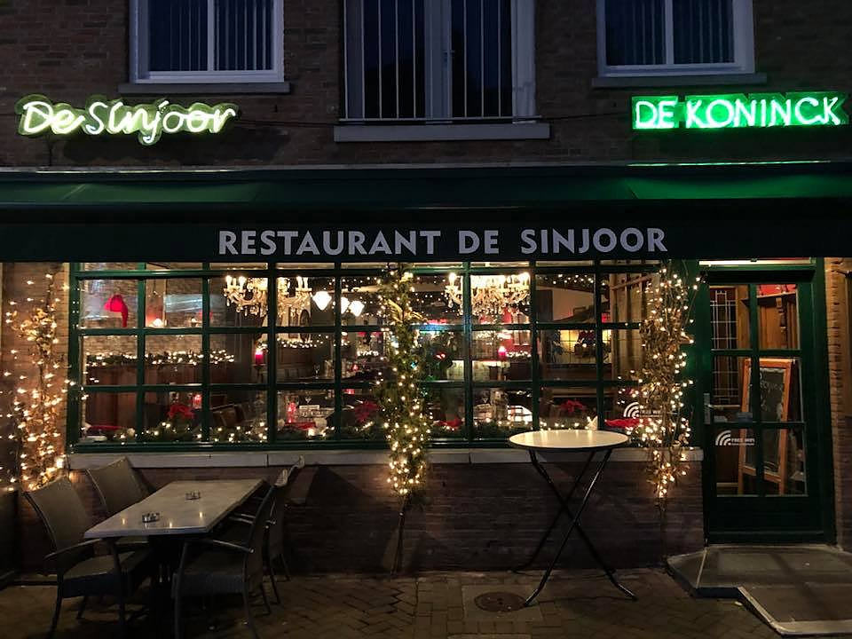
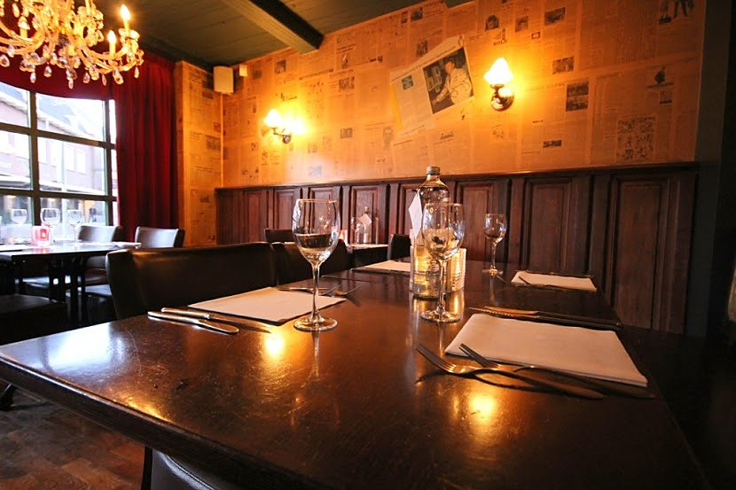
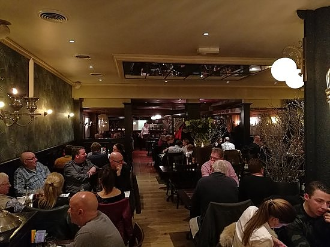
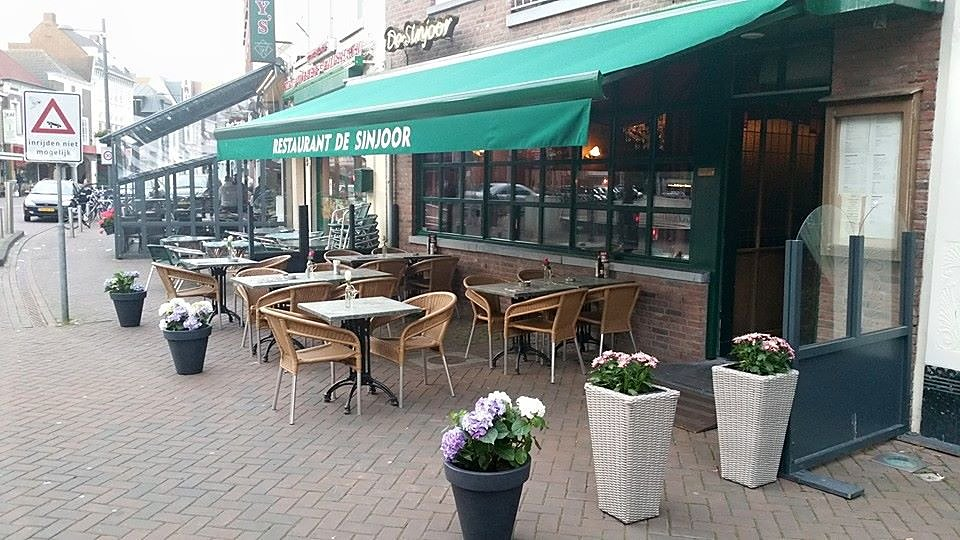

Oktober
Madiwodomenu
Drie gangen naar keuze, elke maand anders. Deze maand met stoofvlees, kabeljauw of entrecote.
€ 29,50
Bekijk menu

Antwerps restaurant aan de Bloemenmarkt in Roosendaal, al sinds 1969. Van stoofvlees en mosselen tot vlees van de grill, met een goed glas wijn of een echt Bolleke De Koninck. Elke dag open vanaf 16:00.



"Een levensgenieter, Antwerpenaar in hart en nieren, met oog voor gezelligheid en de schone dingen van het leven, zoals eten en drinken."
Een Sinjoor is een Antwerpenaar van wie de familie al generaties binnen de oude stadswallen woont. Een gezellig mens, die van grappen en grollen houdt.
Die traditie zetten we voort in het hart van Roosendaal. We ontvangen u met oprechte gastvrijheid en serveren een maaltijd die met liefde is bereid, met een goed glas wijn of een echt Antwerps Bolleke De Koninck.
Laat weten wanneer u wilt komen en met hoeveel personen. We bevestigen uw reservering zo snel mogelijk.
Bel ons gerust, ook voor groepen of het kerstmenu.